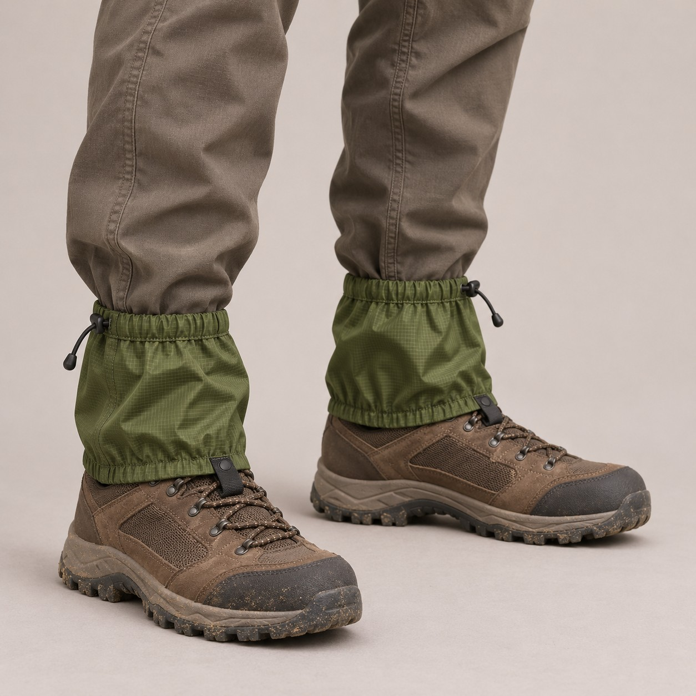
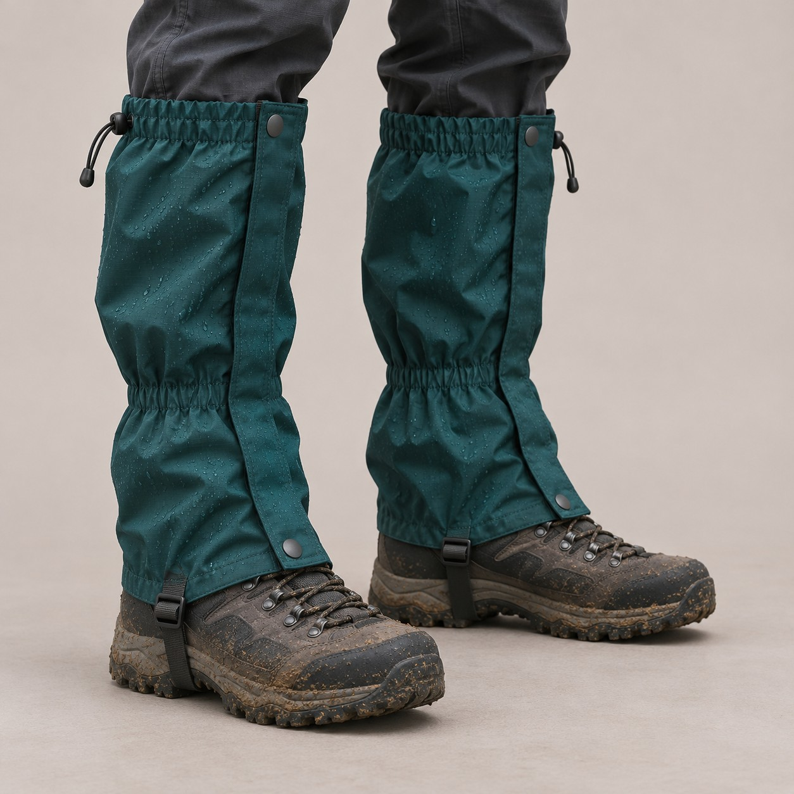
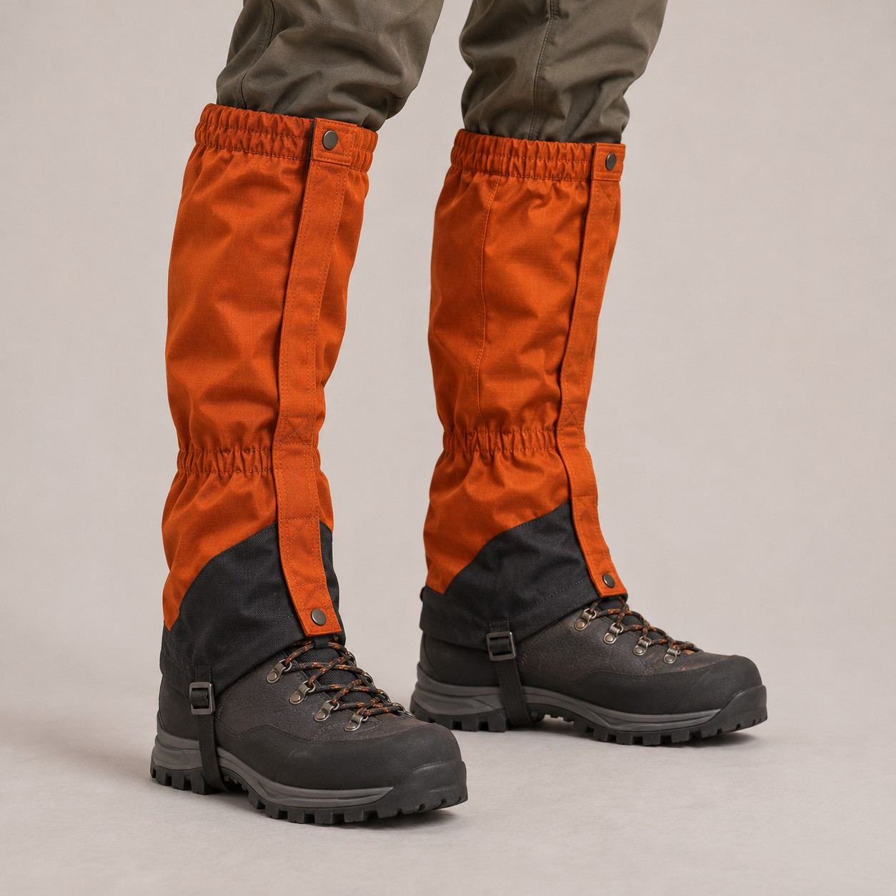
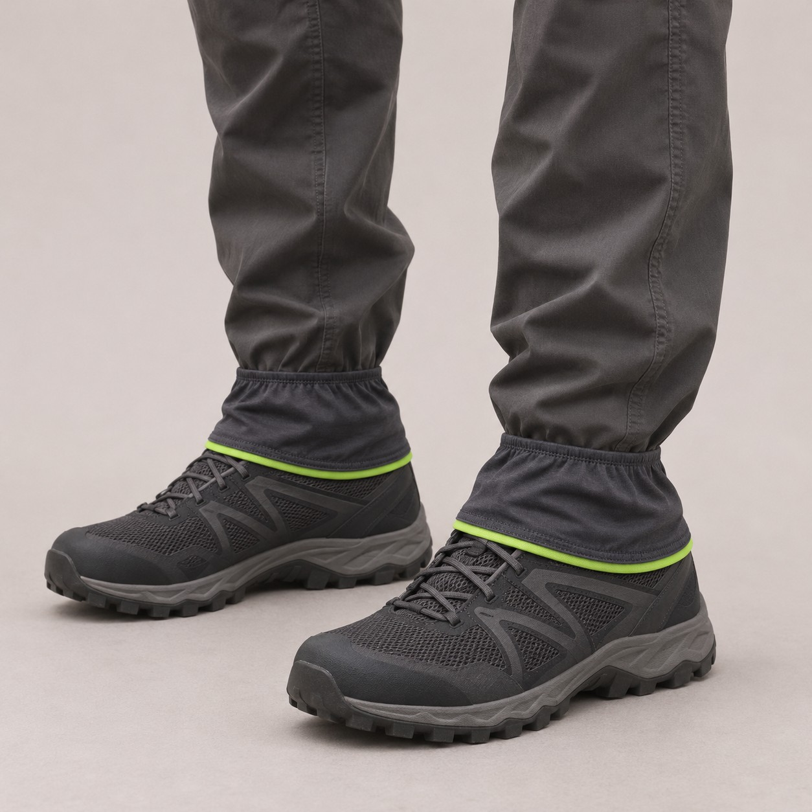
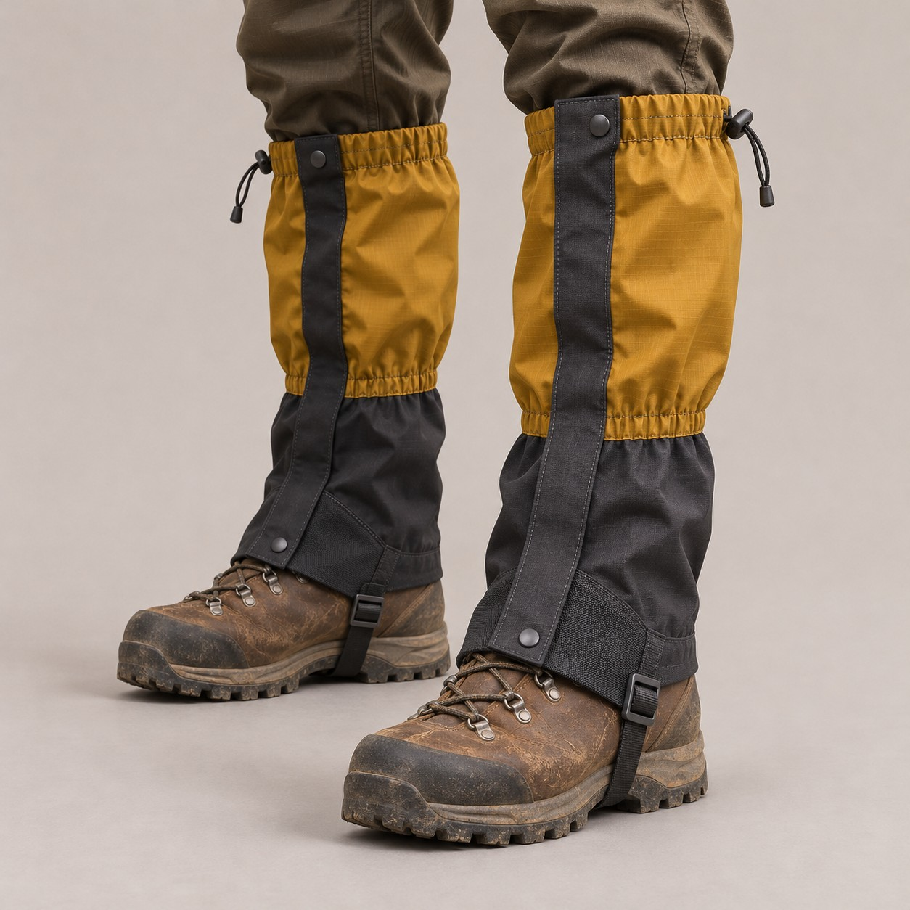

Senderismo
Senda Ligera
Polainas bajas para evitar que entren piedrecillas y tierra en el calzado.
19,95 €
Ver detalles
Pensadas para rutas cortas por senderos secos con zapatillas de montaña.
Elige tus polainas para caminar por senderos, atravesar la nieve o jugar al fútbol.

Senderismo
Polainas bajas para evitar que entren piedrecillas y tierra en el calzado.
19,95 €
Pensadas para rutas cortas por senderos secos con zapatillas de montaña.

Lluvia y barro
Cubren el tobillo y parte de la pierna en caminos embarrados.
27,95 €
Recomendadas para senderos con charcos o hierba mojada. Se colocan sobre la parte superior de la bota.

Nieve
Modelo alto para cubrir la caña de la bota en rutas con nieve.
39,95 €
La cobertura alta ayuda a mantener la nieve fuera de la bota al caminar.

Senderismo
Polainas cortas para caminar con calzado ligero por pistas de tierra.
22,95 €
Su perfil bajo cubre la abertura de la zapatilla y deja libre la parte superior del tobillo.

Lluvia y barro
Mayor cobertura para jornadas largas por caminos mojados.
32,95 €
Cubre la caña de la bota y la parte baja del pantalón en rutas con vegetación húmeda.

Fútbol
Polainas rojas a rayas con botas blancas.
19,99 €
Consultar producto

Los modelos y los precios son de ejemplo.